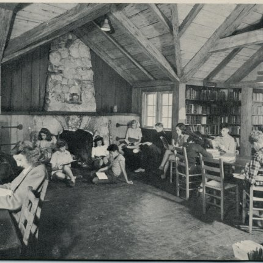

GreendaleEducation Services
A nursery and primary school on Kimera Road, Kasubi — quality holistic education that equips learners with knowledge, skills and strategies to succeed in a global world.
Nurturing Tomorrow's Leaders Today
For over 7 years Greendale has grown from a humble nursery into a comprehensive primary school — a model school raising innovative, academically excellent and self-reliant leaders, in a stimulating and colourful learning environment.


Started by educators who wanted a school they would send their own children to.
What began in 2019 as a single nursery class on Kimera Road is now a full primary school in Kasubi–Rubaga Division. The founders — career teachers trained in early childhood and primary education — built Greendale around small classes and a God-fearing environment.
{{ a.body }}
{{ a.body2 }}
Explore our programs
One continuous learning journey from early childhood through Primary 6, on a single campus along Kimera Road. Tap a card for the curriculum.
Classrooms, sport and school life
Four reasons parents choose us
{{ w.title }}
{{ w.body }}
{{ s.title }}
{{ s.body }}
The people in the classrooms
Door to gate, every morning
{{ slide.title }}
{{ slide.body }}
What families say
Latest from Greendale
Ready to join Greendale?
Applications for Term I are open. Pick up forms at the office on Kimera Road, or send an inquiry and we will call you back.
{{ modal.title }}
{{ modal.body }}
{{ modal.body2 }}